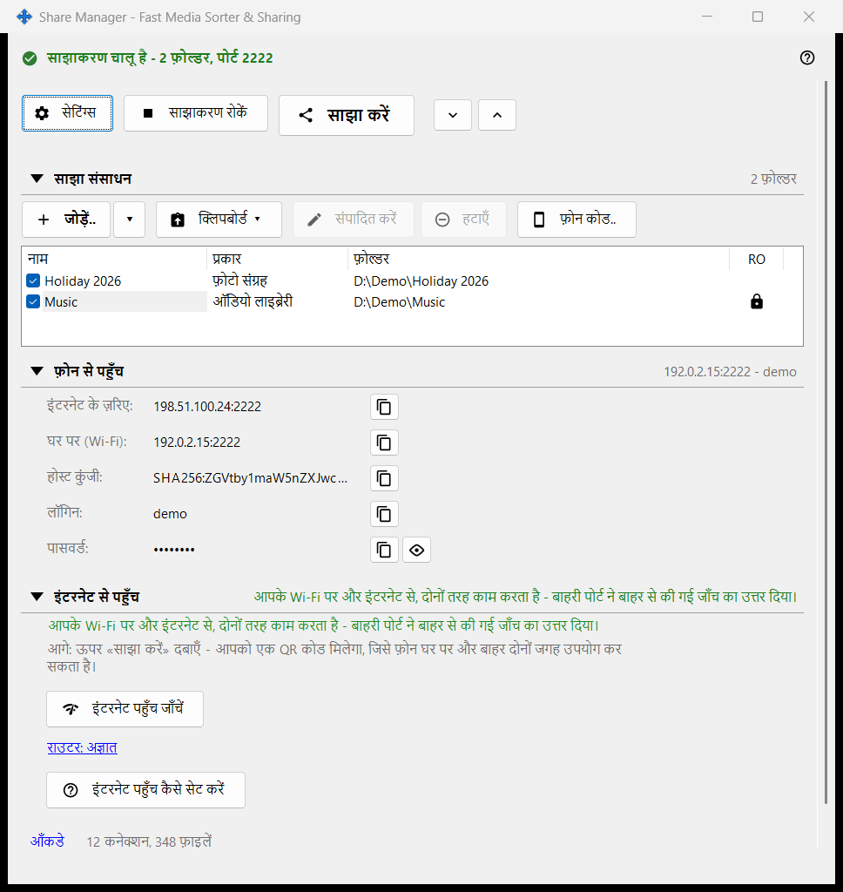
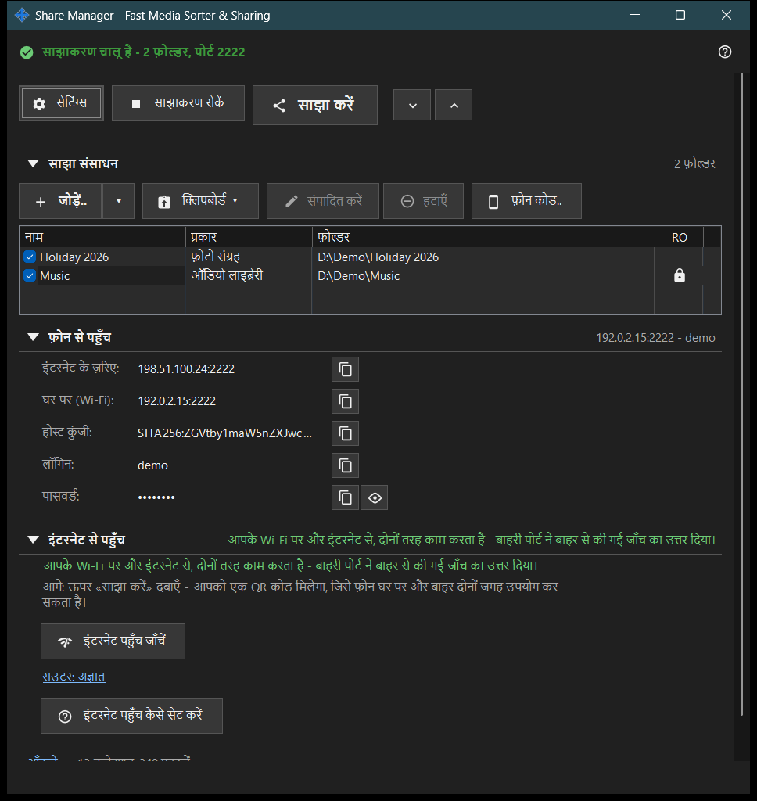

Share Manager - Fast Media Sorter & Sharing
यह किस लिए है
Share Manager की मुख्य विंडो, जो स्थानीय साझाकरण और शेड्यूलिंग सेवा है। यह उन फ़ोल्डरों की सूची दिखाती है जिन्हें यह पीसी SFTP के ज़रिए फ़ोन के साथ साझा करता है, साझाकरण शुरू और बंद करती है, एक्सेस कोड देती है और बताती है कि फ़ोन पीसी तक कैसे पहुँच सकता है। शेड्यूल किए गए ऑपरेशन और एक्सचेंज खाते के पृष्ठ प्रबंधक सेटिंग में हैं। यह व्यूअर से या ट्रे आइकन से खुलती है; विंडो बंद करने पर ऐप ट्रे में बना रहता है।


इस क्रम में
- जोड़ें.. दबाएँ और सूची में फ़ोल्डर रखने के लिए फ़ोल्डर.. चुनें।
- फ़ोल्डर पर निशान लगाएँ: निशान वाले फ़ोल्डर ही परोसे जाते हैं।
- साझाकरण शुरू करें दबाएँ (इसके लिए कम से कम एक निशान वाला फ़ोल्डर चाहिए)।
- फ़ोन के लिए QR कोड या .fmscfg फ़ाइल पाने हेतु साझा करें दबाएँ।
- घर के नेटवर्क के बाहर से पहुँच के लिए इंटरनेट से पहुँच समूह खोलें और उसके दो बटन इस्तेमाल करें।
- काम पूरा होने पर साझाकरण रोकें दबाएँ।
तत्व
ऊपरी पंक्ति
सेटिंग्स प्रबंधक की सेटिंग्स खोलता है। सर्वर चलते समय साझाकरण शुरू करें साझाकरण रोकें में बदल जाता है। साझा करें एक्सेस कोड का विज़ार्ड खोलता है और केवल तब काम करता है जब साझाकरण चालू हो; नहीं तो संकेत कहता है कि पहले सर्वर शुरू करें। सभी खोलें और सभी समेटें नीचे के समूहों को खोलते या बंद करते हैं।
साझा संसाधन
हर संसाधन की एक पंक्ति, चेक बॉक्स और नाम, प्रकार तथा फ़ोल्डर स्तंभों के साथ। निशान वाली पंक्ति फ़ोन को परोसी जाती है; खाली सूची में पहला संसाधन जोड़ें.. दिखता है। आख़िरी निशान वाले फ़ोल्डर का निशान हटाने पर विंडो पूछती है कि साझाकरण रोकना है या नहीं, क्योंकि जुड़े हुए फ़ोन कट जाएँगे। किसी पर निशान लगाए बिना साझाकरण शुरू करने पर केवल यह संकेत आता है: पहले एक फ़ोल्डर जोड़ें और उस पर निशान लगाएँ।
फ़ोन से पहुँच
वह कनेक्शन डेटा जो फ़ोन या किसी भी SFTP क्लाइंट को चाहिए: इंटरनेट पर और घर (Wi-Fi) में पता, IPv6, होस्ट की, लॉगिन और पासवर्ड। पासवर्ड दिखाएँ उसे प्रकट करता है और पासवर्ड छिपाएँ उसे फिर ढक देता है। समूह के नीचे का पाठ बताता है कि फ़ोन पीसी तक केवल घर में पहुँचता है या बाहर से भी।
इंटरनेट से पहुँच
इंटरनेट पहुँच जाँचें इंटरनेट पहुँच जाँच की विंडो खोलता है। इंटरनेट पहुँच कैसे सेट करें राउटर की मार्गदर्शिका खोलता है। राउटर: .. लिंक राउटर का अपना पृष्ठ खोलता है; कोई राउटर न मिलने पर यह राउटर: अज्ञात दिखाता है। समूह में एक चेतावनी है: पता, लॉगिन और पासवर्ड जानने वाला कोई भी हर साझा फ़ोल्डर तक पहुँच सकता है, इसलिए QR कोड या .fmscfg फ़ाइल प्रकाशित न करें और काम पूरा होने पर साझाकरण बंद कर दें।
आँकड़े
समूहों के नीचे आँकड़े लिंक एक छोटे सारांश के पास रहता है, जैसे N कनेक्शन, M फ़ाइलें। लिंक पूरे काउंटर के साथ साझाकरण की स्थिति की विंडो खोलता है।
जब सर्वर सुविधाएँ बंद हों
जब तक सर्वर घटक सक्षम नहीं होता, विंडो सर्वर सुविधाएँ बंद हैं और सर्वर सुविधाएँ सक्षम करें.. बटन दिखाती है, जो फ़ोल्डर साझाकरण सक्षम करें विंडो खोलता है। यदि साझाकरण घटक इंस्टॉलेशन में नहीं है, तो विंडो यह बताती है और ऐप फिर से इंस्टॉल करने को कहती है।
प्रबंधक सेटिंग · SFTP साझाकरण सेटिंग · एक्सचेंज सर्वर सेटिंग